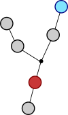
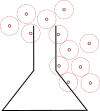
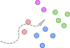
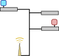

Current Research Projects:
Data Analytics for Coevolutionary Peer-Instruction (NSF-Funded)
I am working with researchers at the University of South Florida on a
project that overlaps educational data mining, intelligent tutoring systems, and data analytics. USF's
role involves building a web-based system to intelligently generate multiple-choice questions for a
peer-instruction based system, where students provide feedback to justify why potential answers are
right or wrong. We're building the data analytics and web-based data dashboard to help instructors
understand the pre- and post-test results of these experiments. This involves data analysis techniques
that include state-of-the-art multiobjective methods, such as dimension extraction to understand the
structure of the student-problem interaction space.

Theory for Qualitify Diversification Algorithms (College-Funded)
I am currently developing
theory to better understand how heuristic algorithms such as Novelty Search examine
different kinds of spaces. Novelty search algorithms are based on evolutionary algoritms, but
they abandon direct search on an objective function in favor of a search for increasingly novel
potential solutions. My theoretical framework borrows ideas from k nearest neighbor
theory to understand how such methods spread out and cover spaces.

Swarm-Based Decentralized Task Allocation
I am working with researchers at the University of Central Florida
and the University of Wisconsin La Crosse studying how to develop efficient methods for swarms of agents
to perform basic task allocation with minimal communication in a decentralized way. Our lab's focus is on
the foundational mathematics for bounding certain agent behaviors, as well as on understanding the
relationship between problem properties and role specialization in multiagent teams.

Smart Network Routing (DoD-Funded)
I am working with researchers in the
modeling & simulation community in Orlando, FL and the University of Central Florida to develop algorithms that use machine learning methods
to move services around within a network to keep latencies as low as possible. This project involves
deep learning of recurrent networks, network routing optimization, and network protocols.

Some Example Past Research Projects:
- Robust path tracking using probabilistic weighted graphs
- Connection discovery in digital history repositories
- Behavior learning and representation in heterogeneous robotic swarms
- Using Software Defined Networking (SDN) to improve real-time streaming
- Robust server allocation in distributed simulations
- Theory for compositional coevolutionary computation